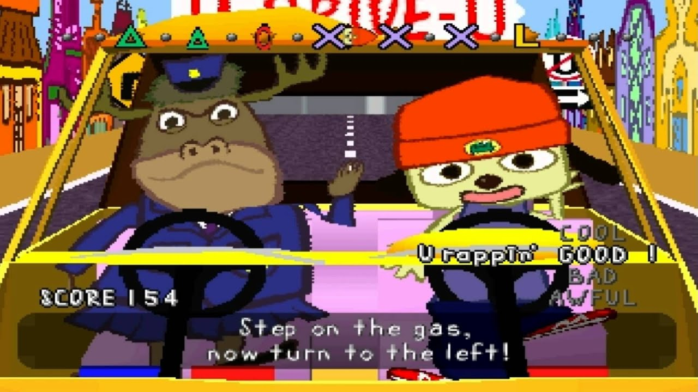
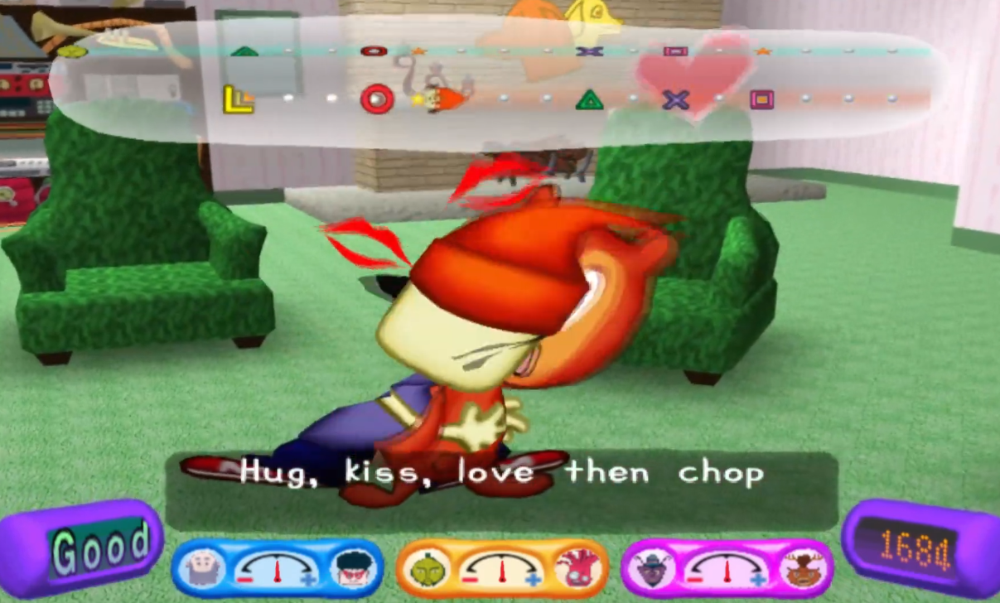
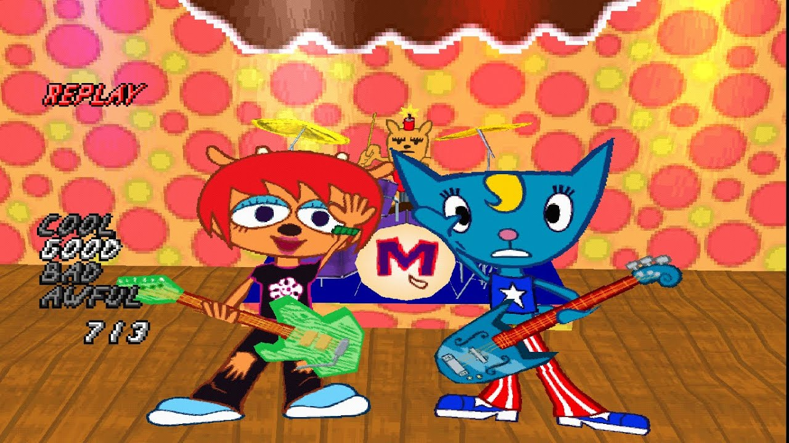
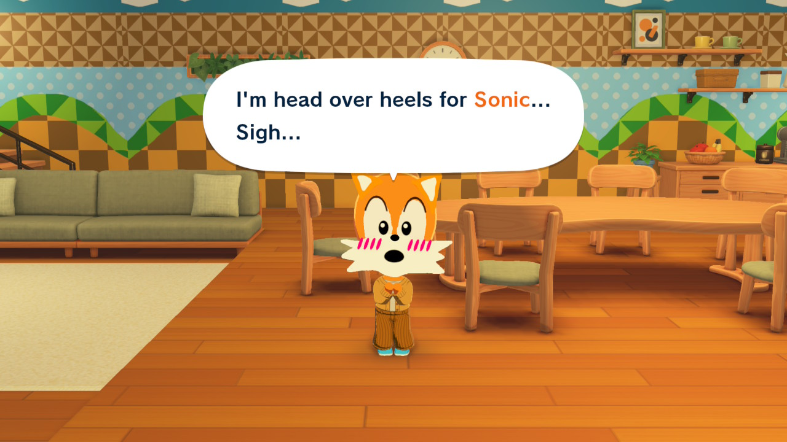
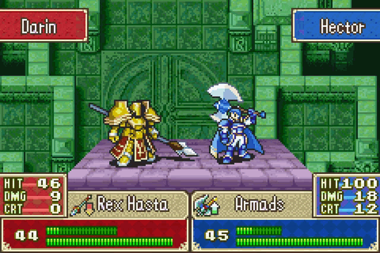
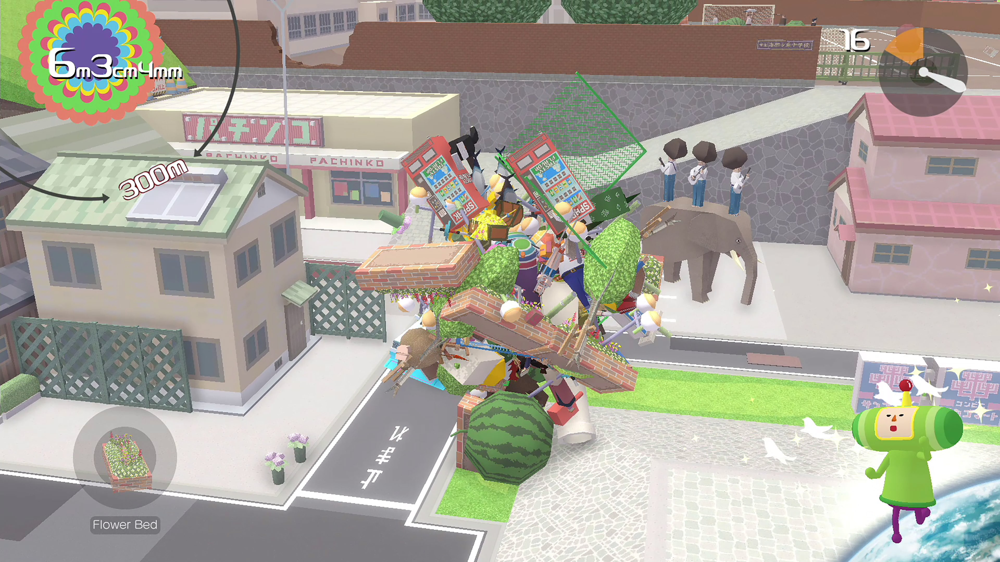
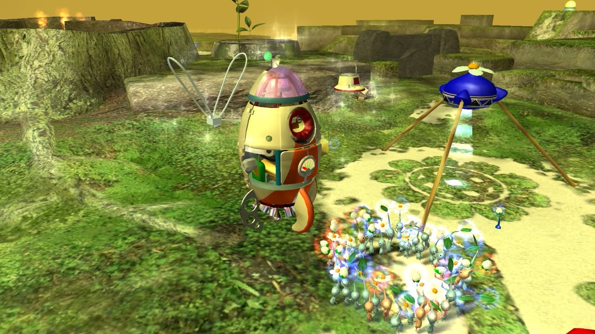
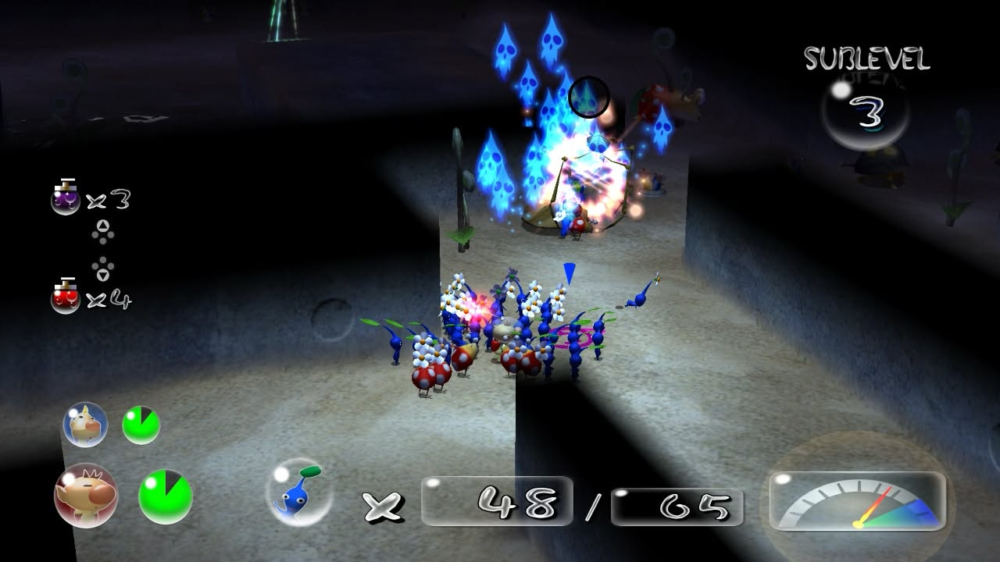
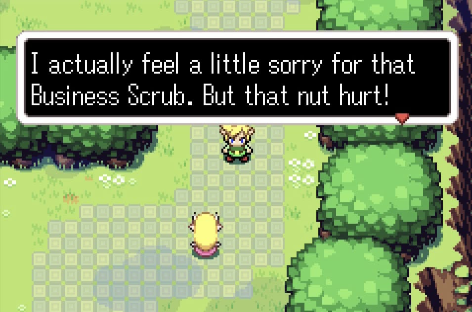

Every Game I Played In 2026

Witty tagline here, amirite?
UNDER CONSTRUCTION, READ IF YOU DARE
Writing that list of every game I played in 2025 scratched a super specific itch so I’m back on it with my 2026 games. In fact - I’m so on it that the year isn’t done and I’m already desperate to write about some of these games, and as such; this is a little ongoing preview of my thoughts as I finish each game. This list obviously won’t be fully finished until the end of the year - but if that day never comes (which it very well might!), I’ll rest easy knowing that I put my thoughts down on Fire Emblem: Radiant Dawn. It’s also good for me to write this stuff down in case any of it ends up being way too long and spinning off into its own article - like my thoughts on DK last year. And just like with...
JANUARY: The month of JRPGs and Jams
Fire Emblem: Radiant Dawn

The Game That Saved The Fixaton I Had On The Franchise
So, Radiant Dawn... I have a bit to say about it! A bit too much, so here's a much larger article about it.
I love this game so much - but I can't just openly recommend it without playing Path of Radiance first... oh what's that? They put Path of Radiance on Switch 2? What a perfect coincidence!
Sonic Unleashed

New Year, New Sonic, I guess
It seems typical that I would start every year with a Sonic game. Sure, I did technically finish Radiant Dawn first - but I started it last year, it just barely didn't make my list for last year. This was the real first game I finished this year, and a real doozy to finally check off the backlog after... 18 years? I feel like I'm withering away...
Unleashed has had a bit of a resurgence in recent years due to... nostalgia? I guess? Sonic is so weird. I love this series to death but people weigh positive qualities of games in fascinatingly different lengths. This game has become hugely beloved for it's mach speed Sonic levels which are, in all fairness: incredibly fun, aesthetically gorgeous, and mind-blowing musically. With how people talk about this game, you'd think that was the whole thing, but that's like... 20%? The other 80% are horrific boss fights, egregiously slow God of War-esque beat-em-up segments, and pace-breaking medal-grinding nonsense. Said 80% was what held me back from finishing it all these years. So now that I have... was it worth it?
Shockingly, yes? I think so? Sonic is so weird! It messes with your brain, causes you to look at hugely flawed experiences with a shimmer of fascination, and to weirdly look over holistically unflawed experiences.
Sonic Adventure 2 is another good example. 70% of that game makes me want to rip my eyes out, anything where you play as Tails or Knuckles is horrendously unenjoyable. But that other 30%? The Sonic levels? The Chao Garden? The music? THE CUTSCENES? Makes me want to put it as one of my all-time favourite games. Please never ask me to play it.
Same with this, although to a much lesser extent - because I definitely prefer the Adventure style of Sonic gameplay, but still... Do I think fondly of Unleashed? Yes? Would I ever play it again? Please no.
Bits and Bops

Rhythm Everyday
An indie rhythm game of late last year, Bits and Bops wears its Rhythm Heaven inspiration on its shoulder - that’s why I was initially interested! It’s awesome to see one of my favourite Nintendo games get so much love in the indie space, but unfortunately it felt very confined by the loving homage box it has planted itself in. I’ve played a few other Rhythm Heaven inspired indie games, namely Melatonin and Rhythm Doctor - and both firmly step beyond the limitations of said box. The former is a thematic spectacle that leans much more lo-fi (and I actually wrote an article about it not long after starting this blog!), whilst the latter takes a single gameplay idea and pushes it so far to create a much more distinct identity - to the point where the Rhythm Heaven DNA is only suggestive.
Ultimately, I left Bits and Bops feeling happy but wishing it pushed more into it’s own area: The rhythm games don’t do anything bold theory-wise, and it doesn’t have much of it’s own identity visually or thematically. It’s also much easier than Rhythm Heaven: I was able to perfect quite a few games on my first try, which left little ambition for me to improve. I will say that the back half of the game is much better than the front - both in terms of memorability and difficulty - so at least it ends on a high note.
It should go without saying, but the music is very good! I didn't find the songs getting stuck in my head too much, but I'm listening back now and really liking these. I'll add some of these to a playlist, and maybe it will draw me back to the game by the year's end, and you'll see it climb up this list.
Even though they only composed a tiny portion of the meal; my favourite part were the co-op rhythm games, specifically the blacksmith one! I’d never really seen that kind of cooperative rhythm experience, and it was something that, whilst small, stuck with me and I’d like to see more of in a larger context. Rhythm games and party games don’t have too much overlap; sure, there’s Guitar Hero and its ilk, but this felt like an interesting little experience worth fleshing out more.
Xenoblade Chronicles: Future Connected

The Worst Thing Xenoblade Has Ever Done*
*Although that mainly just means it's a 5/10 in a 10/10 franchise.
Future Connected is... comfy. Although really, the comfy part is playing Xenoblade 1 again, which is like a second skin to me. The combat system, the way the world feels, an easy top 5 game of all time for me. So adding a little extra... bit to it is inoffensive. It's like the video game equivalent of when sitcoms would do a little reunion episode 10 years after it finished airing, for charity or something. Especially fitting since it came out in 2020 - prime time for such a reunion.
Remember Melia? She's back, in Pog Form! Turns out she made up with her sister and her people and everything was happy for her in the end, yippee! It's so nice seeing her be happy and seeing Shulk mellow out, and hearing about Riki's kids... and... yeah, there's nothing really to say here. I'm very glad it exists, but it does not hold a candle to either of the bonus stories of 2 and 3. Speaking of...
Xenoblade Chronicles 3: Future Redeemed

The Best Thing Xenoblade Has Ever Done*
*Since the first game. I mean, are you kidding me? That game is a masterpiece! This game, well...
It's kind of also a masterpiece! Just a little one. Future Redeemed is insane, and mostly because of the sheer difference between it and the game it’s based on. It’s literally night and day: what a huge step this is in tight pacing, having likeable characters with unique perspectives, and just generally how much fun I was having. This game rocks.
Because it’s a much shorter story, it has to work so much harder to endear you and it succeeds with flying colours - the vibes of this game are just so good. No more clunky class system, the battles feel much better because planning out builds doesn’t feel like a stab in the dark, and character build progression being tied to area exploration feels so natural! One of the only issues I had with Torna: The Golden Country, was how it forced all of the extra content onto you to pad the game. I liked said extra content, but XC3’s DLC setup feels so much more natural, and I did all of said extra content just because it felt good.
It's feel good in a very different way from Future Connected; which feels good because it leeches off a game I love. Future Redeemed feels good because it takes a game I'm mixed on and elegantly connects loose threads and dots to become such a satisfying culmination of everything Xenoblade.
The music is so good, I've been listening to the battle theme nonstop since I started writing this; and the characters? They are so loveable instantly, and provide a much more interesting perspective on the world than the cast of base game Xenoblade 3.
Ironically, a lot of what I love is why I love Radiant Dawn - it skips the faff and goes straight into the best bits of this world. The title is perfect, because it genuinely does Redeem the world and mechanics of Xenoblade 3 for me.
Following on from said Radiant Dawn article, maybe that's just it? The kind of sequel I'm looking for that purely expands on the existing game has been moved to the space of DLC? I'm not a huge fan of that (and I don't really agree, the Xenoblade series is the exception that proveds the rule here).
FEBRUARY: The Month of Freestyling and Freeing Shadows
Pokemon XD: Gale of Darkness

Shadow of its Former Self
Next to the aforementioned Sonic, Pokémon has to be my most replayed series for an immediate wave of comfort - so I figured I should fill one of the main gaps in my catalogue and play the sequel to Pokémon Colosseum.
Pokémon, especially in the Gen 2-4 era, always married the JRPG genre with life sim; the day night cycle, decorating your base, the heap of side content - the main appeal was to get players immersed in the world. I always thought Colosseum was so neat for leaning much more heavily into the JRPG side of things - the more intricate battle system of double battles being prioritised, the lack of random party members, the stripping of the sim elements. Orre felt much less like a real place and much more like a fantasy world, especially with the high camp, Fifth Element style character designs; and that was interesting!
And XD is more of that but also less of that? It takes deliberate steps to re-incorporate life sim style elements, such as the Wild Pokémon! …That notify you in the middle of your dungeon exploring to break the pace and tell you to leave and run straight there. Same with the Shadow Pokémon purification notifications, which are theoretically more streamlined but in practice far clunkier because they really take you out of the experience. In an attempt to immerse - they distanced themselves from the reality that makes Pokémon so compelling, and lost a bit of what makes Colosseum compelling on a separate basis.
The pacing and endgame is a total mess too. It feels like half of the game is taken up by the final dungeon, and a huge amount of your possible party members are there. In fact, the game stretches the Shadow Pokémon mechanic way too thin with how it asks you to catch multiple Shadow Pokémon per fight, it takes way too much agency out of the players hands and de-emphasises the strategy of the double battles by making it rely so much more on the luck of catching Pokémon.
Ultimately, I feel like XD pushed itself too far and inadvertently became something else that feels way more… lacklustre than it’s predecessor? A bit of a contradiction; but hey ho.
PaRappa the Rapper: The Hip Hop Hero

I Gotta Believe?
One of my ambitions with this year is to flesh out my knowledge of classic PlayStation franchises. I never grew up with any Sony consoles, so almost all of these (ape) escaped me - and one game that’s been on my list the longest is the grandpapa of all rhythm games: PaRappa.
I am one-hundo-percent obsessed with this game: a masterclass in the kind of bizarre I love about games from this era. Huge ambition and style, a game where the feeling outshines the flaws tenfold. Said flaws are simultaneously unavoidable and also a huge part of the memorability.
PaRappa has a mind of its own - it feels as though it has chaos embedded into the code. You really need to throw away any inhibitions of the genre that followed in its wake. Input lag seems to vary depending on the stage, breaking the rhythm is rewarded instead of penalised. It is a game that asks for imperfection rather than perfection, and it’s so much more distinct for it.
I utterly adore the way that the stages dynamically responds to how you are doing - having the car swerve horribly in the driving test the worse you are doing, having the cooking show host leave the TV to berate you, or the opposites of having the master's leave the scene when you start outperforming them. It just adds an extra layer of humour to the whole setup. The charm levels are just through the roof. If only there was a sequel that improved on some of these issues...
PaRappa the Rapper 2

PeakRappa?
Take everything flawed about PaRappa 1 and fix it. The UI is so much more coherent, there's no lag and laetency, gameplay is just improved tenfold. The presentation of the game also looks so cool; I think it's the use-age of shading but it has this really vibrant look to it that I've never really seen another game pull off. The plot is equally as batshit, but has a bit more of a through-line with the characters and plot.
All of these sound great but strangely, I found that the game didn't really have the same memorability factor as the first. And it is maybe literally the fact that each level can very easily be beaten on your first try - some of that struggle against the rough edges really amplified the memorability, because you'd actually want to back again and again and again to make it through them. It also might be the style of the music, PaRappa 2 goes for more of a disco vibe across the whole thing, which is catchy but less catchy than those loops from the first game that really fit that strange intersection of hip-hop and kid's TV.
Is it better than the first? To play, for sure, a thousand times yes. In terms of memorability? Unfortunately not really. But the story does get so insane that it sometimes does? I could see this being a comfort game that I'd return to and it would go up the ranks, especially since the scoring system leaves so much more room for improvement than the first game, which felt a lot more like a single, brutal hurdle to overcome in the dark. Who knows? If only there were another game that had the best of both worlds...
MARCH: The month of Melancholic Futures and Melodic Presents
Um Jammer Lammy

The Platonic Ideal of PaRappa?
As well as having the simultaneously best and worst title for a game I think I've ever seen, Um Jammer Lammy is the videogame equivalent of the Goldilocks Zone: if PaRappa 1 has great songs with poor gameplay, PaRappa 2 has less memorable songs with far better gameplay; UJL hits a middleground that really works for it. The gaemplay isn't as polished as 2, but is a lot more polished than one; leaving some songs to have a really perfect level of difficulty. The last level, especially, is just so perfectly tuned to be tough but fair, sounds incredible. (Although I will say that the 5th level is a total stinker.)
Even if the title is different - this is 100% a PaRappa game, in fact, you can play through the entire game again as PaRappa with entirely new cutscenes and remixed songs which is such a neat feature! ...If slightly squandered by the weirdly compressed PaRappa vocals. (He sounds like he's in an air fryer?)
So which way western man: binge-ing the PaRappa series in a week has kind of made my brain slide out the side of my eyes, and these games all feel largely indistinguishable in terms of quality due, all evening out to a solid 8/9 out of 10. I'd probably rank them the exact same. What a consistently inconsistent franchise!
Pokemon Pokopia

Can we fix it? Yes, we Kanto!
I do want to flesh this out with a bit more gameplay talk since I kind of ignored that in my seperate article on it, but hey - here's my thoughts on Pokopia as a whole.
APRIL: The month of Ambiance and Actually Strategising
Tomodachi Life - Living the Dream

The Sitcom Simulator
I've been a fan of Tomodachi Life since my brother played it on 3DS. That was one of my favourite bonding experiences I had growing up with him: adding our favourite characters and seeing how the world would unfold naturally.
The internet has taken to this game like a family of flies to that slice of fruit you left out slightly too long, and I'm so glad! What a flower in Nintendo's cap, I'm glad that they let their quirky side still do fun things. The Switch generation has been a relatively safe one, and with the merger of Nintendo SPD at the end of the 3DS' life, I was worried that some of Nintendo's best series, like Rhythm Heaven and Tomodachi, would stay buried with them. But both are back, and I couldn't be happier.
There is a bit of a content dirth in this game, you do always wish there were more weird events and fun things to do with your Miis, but I also feel like there has been a lot of revisionist history regarding the 3DS game, because I distinctly remember it having that exact same problem. I can forgive the slight lack of content due to how cool the perpetually intractable live island is. There's so much happening all the time in this game, and when your island really fills up and becomes bustling, it's such a spectacle.
Like a katamari, this game gets better and better as it amasses more and more quirks through play. Answer a few questions genuinely from the game, add some of your favourite characters, and in an hour you'll have your best friend falling in love with Thomas the Tank Engine because they both love "being judgemental."
Tomodachi, much like Pokopia, hits a sweet spot of not feeling like a "life sim", where I need to check in all the time and be immersed in the world. I'm never worried about growing crops or maximising profits or whatever - it's a sitcom simulator. Playing it feels like popping on an episode of Parks and Rec in the evening to watch whilst eating dinner. It's just comforting, isn't it?
Fire Emblem (GBA) - REPLAY

Weirdly Welcoming Warfare
FE7 is a weird game. Fire Emblem presents itself as this grand fantasy epic - continental scale wars, interpersonal drama, building high scale characters. But for some reason, FE7 feels like a cozy little road trip with your best friends.
There's a pinch of grand fantasy tragedy to salt a meal of warm fuzzy wars - family reunions, life long friends. It's three best friends on a continental journey, taking pictures at every photo op en route. Each chapter feels like a whimsical little scene, and the cartoony animations give it much more of a Pokemon-esque coming of age anime journey vibe than an "oh shit, Hector just decapitated that guy" vibe.
This was my first Fire Emblem, as it was for many, and it still holds up; even if it was succeed by later games in terms of storytelling and... progression (the emphasis on pre-promotes takes away from the zero-to-hero arc of building your units up). There's just such an insatiable charm about FE7 that you can't put down.
MAY: The month of Moving Marbles and Mountains
Katamari Damacy

Bless my soul, Prince was on a roll
The main comments that I got when telling everyone that I was playing Katamari Damacy for the first time was "How have you never played it before? It's so you!"
This is a game that I feel like all game design students need to play. It's so tactile and intuitive and bizarre and quirky yet simultaneously coherent. It somehow knows exactly what it wants to be, whilst the thing that it wants to be is something that you've never seen before. The controls are so weird and yet so simple, it's easy to pick up yet by the time you are done you'll feel nowhere near a master of the physics.
I'd never played it before because it was mostly a PlayStation thing, but in my dedication to playing a few more classic PlayStation franchises this year, I couldn't miss out on this. And honestly... I'm just so excited to have played it! I really feel like I'm in an era of game discovery and rediscovery, expanding my palette and playing new things when I, for the most part, hadn't for years. And a game like Katamari is perfect to squeeze off some of the grey matter and remind me why I love video games. Because in what other medium, other world, other universe but our own, could something like Katamari exist?
JUNE: The month of Just Pikmin
Pikmin - REPLAY

Time for my yearly relapse!
You know, I'm saying that; but I haven't actually replayed the Pikmin games in a solid half decade. For games that I rave about so much and so often, and for how short they are - it's kinda shocking! Spring always gets me in the mood to play Pikmin, so I figured now was exactly the time to dive back in, and it was like I never left.
Pikmin (or... Pikmin 1? As it is now retroactively called on the Switch version? How weird?) is still as fantastic and original as ever. There's no game in the world like it, not even it's own sequels match the same level of real-time strategy and isolation. It's one of a kind! If it was brand new to me, I'm sure there's loads I could say about it... but this game is like embedded into my DNA. I can't really write an essay about something so intrinsic to me, it would be like writing about why I'm left-handed!
I will say that this replay was the first time that I fought the Smokey Progg secret boss! It was really cool to see a bit of the game that I'd never really engaged with. From a design perspective, it's very interesting that a game with such time-sensitive design has so many time wasting secrets you'll never see, but I love how it makes the Pikmin planet feel much bigger. The idea that the world evolves and changes rapidly is something that was clearly important to the designers of Pikmin 1 and 2, and it's something that later entries pretty much fully abandoned.
Pikmin 2 - REPLAY

Plucking Bull-Chacho!
I talked about it a fair bit in my Pikmin 2 x Backrooms conspiracy article (sure, whatever) - but Pikmin 2 really grew on me with a replay. At the same time, this game can also eat my ass. I can have an appreciation for all of the things this game does right - both natural expansions of the first game like the Piklopedia, the worldbuilding, the new bosses - and the unnatural expansions of the caves and the lack of time sensistivity... but some of this game's level design is just so hostile that it becomes unfun. Obviously the game has to be hard to prioritise the squad management side of the strategy, but I don't always feel satisfied when executing these strategies. This is a game that heavily rewards turtling and the most boring option, and I think would have benefited from more incentives to move fast.
To talk a bit more about Fire Emblem - that series often provides rewards for fast gameplay. Getting new items for saving villages, or objectives that incentivise more aggressive play. The only time Pikmin 2 does anything like that is in the Submerged Castle, and it creates the most exciting and memorable thing about the game by a landslide. Most of the other caves in the game... kinda suck! There's no reward to taking a risk in this game, other than it just... takes less time, which usually isn't even true. There's no reward for more skillful play, because the game gives you the most powerful tools instantly - if anything, it rewards slowly grinding more Purple Pikmin and sprays. Maybe the game could give you a spray if you finish a floor in a few minutes? Something like that?
It's not what I love about Pikmin, but it definitely has and adds a lot of things I love about Pikmin, and I do still appreciate how hostile and weird it is at times. I much prefer a game that gives me super strong highs and very memorable lows, rather than nothing at all. Pikmin 2, in that specific category, gives absolutely everything.
JULY: The month of Jiving and Jousting
Rhythm Heaven Groove

Beating the Beat until it's Barely Recognisable
I would like to give this one its own article. I've got a lot to say about this franchise...
The Legend of Zelda - Twilight Princess

Slow and Steady wins the race
Once again, I've written a much longer article about this one here; but on the whole, Twilight Princess very pleasantly surprised me. It's opening is pretty dogwater (pun intended), but it slowly claws itself into being much more engaging. It's not like it snowballs out of control or anything, it's just that the disperate parts of the late game are much better. Arbiter's Grounds, Snowpeak Ruins and City in the Sky are all some of the best dungeons the series has to offer, and the game cuts back on the filler (for the most part). The story also picks up a huge amount. My partner said that it's crazy how the game went from stopping monkeys from stealing kids that frankly I don't care about (except the iconic Beth), to Clawshotting across the sky and getting really invested in Zant and Midna's characters, and it's really true. That was obviously intentional, they clearly wanted you to go from no name loser to Capital H Hero... but those early parts really are a slog and it definitely sets the player off on a bad foot. I think public perception of this game would be much higher if the early game was as good as the late game: this game has a reputation of being an Ocarina of Time wannabe, but some of those late-game segments easily clear Ocarina of Time any day of the week.
The Legend of Zelda - The Minish Cap

It's Mid-ish, no cap
Do you ever feel like a game should pinpoint perfect, hit every little factor out of the park for you, but it just… doesn’t? Whether it’s a case of wrong place, wrong time; or it just doesn’t hold up on closer inspection, sometimes a slam dunk can subvert your expectations and completely miss an obvious goal (is that sports?)
You mean to tell me there’s this gorgeous GBA Zelda game, with snappy pacing and a mechanic that lets you see the world from a tiny perspective? I love being tiny!!! Seems like it was made for me! And like… it’s good! It’s a good enough Zelda game. But it kind of squanders a lot of the things that really appeal to me about it.
Minish Cap is a game that took its priorities and flipped them. It’s a short game with only 6 dungeons, which I’m totally okay with! If those dungeons gave… anything? Moments that feel like they should be climactic set pieces feel uneventful, and the most blow-you-away moments happen in ten second bursts.
Here’s a literal example of why I feel like this game’s pacing doesn’t really work for me. On the way to the 4th dungeon, the Temple of Droplets - you have these sections where you have to fill up a bookcase to climb up it, and you have to ride a lily pad whilst cat-tails tower above you like skyscrapers. The sense of scope in these moments is fantastic! And then it all builds up to an unremarkable ice dungeon that could have been copy-pasted in from any Zelda game.
The pacing is fast, but it’s stop-start; there’s no flow to the spectacle! It’s a 10 hour game that shows you the most it’s willing to do with its concept in the first hour. The first dungeon being full of bugs and lily pads makes you feel small, the first item being the Gust Jar feels both novel and useful in so many situations, and the first boss being the Big ChuChu is so fun and playful. It’s easily the most memorable encounter in the game! But the rest of the game feels tethered to the mundane, both in terms of dungeons and items.
Other Zelda games give you items that feel inherently exciting and fun, cool power ups that feel useful! Minish Cap focuses so hard on the “useful” bit that it ditches any spectacle. Digging through dirt, lighting dark rooms, jumping - these don’t feel like upgrades, they feel like things Link should have in his base moveset! I’m not writing home about “the cane that flips things over and pulls them out of the ground” - those are things I can do with my arms. (Although ironically, that’s still one of the better items in this game).
Imagine how exciting this game would be if it took the small bits of its world design - the bookshelves you climb through, the riverside reeds you cower beneath - and made those the dungeons! The spectacle of these moments was clearly The Point Of The Whole Game, so lean into it! The game could be so much more memorable if it did.
Just to cap (heh) this off; here’s some little bits about the game that felt important to mention:
Kinstone trading is interesting but because it’s kinda random, it feels very unceremonious to do a puzzle or combat and just be rewarded with a Kinstone, which is basically just a generic key which might unlock Something later down the line… or it won’t. It’s much less gratifying then directly just getting a Piece of Heart or some Rupees, but when you do the Kinstone fusion itself, you get some of that gratifying feeling back in interest. It’s a cool system, and I like how it interlinks with every bit of the game and the puzzles. Stuff like this makes me sad that this game never got a true sequel like Link’s Awakening did with the Oracle games, because I’d like to see these systems in a more robust game.
Hurdle Town is awesome and feels really bustling, and is a huge step up from the Gameboy games. The world of this game is awesome except the dungeons and the items, which makes it almost an inverse of a lot of other Zelda games. I think I definitely prefer games like Twilight Princess or even Skyward Sword that have a big focus on spectacle, dungeons and cool items - but that’s clearly not what they were going for. But I’m tsk tsk greedy chops, and what the game actually is, that’s still a good time.
Since you are so patient and read this non-finished article, here is an in-porgress ranking of each game. Just so I can keep the formatting whilst I'm working on it.
- Fire Emblem: Radiant Dawn
- REPLAY - Pikmin
- Katamari Damacy
- Xenoblade Chronicles 3: Future Redeemed
- PaRappa the Rapper: The Hip Hop Hero
- Tomodachi Life: Living The Dream
- Pokemon Pokopia
- REPLAY - Fire Emblem (GBA)
- The Legend of Zelda - Twilight Princess
- Rhythm Heaven Groove
- PaRappa the Rapper 2
- Um Jammer Lammy
- The Legend of Zelda - The Minish Cap
- REPLAY - Pikmin 2
- Xenoblade Chronicles: Future Connected
- Bits and Bops
- Pokemon XD: Gale of Darkness
- Sonic Unleashed
I'll see you when the article is done! Hopefully, I mean. Unless you plan to just leave me here, in this ephemeral, existential unfinished article prison. You wouldn't do that, right? You... one single individual person that will read this?